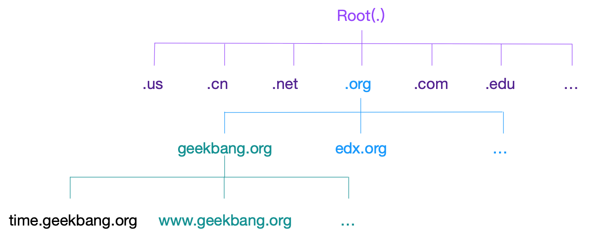
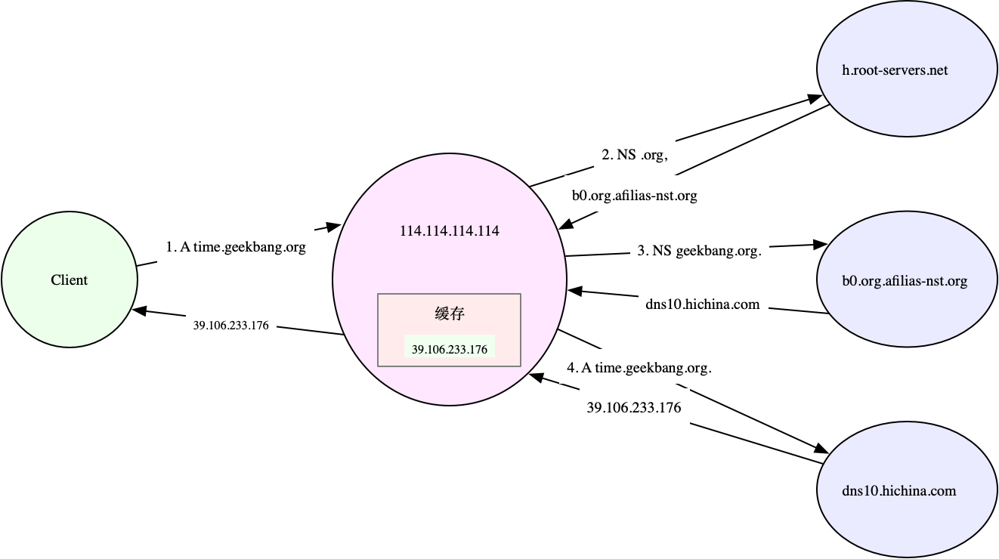

Linux 网络基于 TCP/IP 协议栈构建，而在协议栈的不同层，我们所关注的网络性能也不尽相同。
在应用层，我们关注的是应用程序的并发连接数、每秒请求数、处理延迟、错误数等，可以使用 wrk、JMeter 等工具，模拟用户的负载，得到想要的测试结果。
而在传输层，我们关注的是 TCP、UDP 等传输层协议的工作状况，比如 TCP 连接数、 TCP 重传、TCP 错误数等。此时，你可以使用 iperf、netperf 等，来测试 TCP 或 UDP 的性能。
再向下到网络层，我们关注的则是网络包的处理能力，即 PPS。Linux 内核自带的 pktgen，就可以帮你测试这个指标。
DNS（Domain Name System），即域名系统，是互联网中最基础的一项服务，主要提供域名和 IP 地址之间映射关系的查询服务。
DNS 不仅方便了人们访问不同的互联网服务，更为很多应用提供了，动态服务发现和全局负载均衡（Global Server Load Balance，GSLB）的机制。这样，DNS 就可以选择离用户最近的 IP 来提供服务。即使后端服务的 IP 地址发生变化，用户依然可以用相同域名来访问。
域名与 DNS 解析
域名是全球唯一的，需要通过专门的域名注册商才可以申请注册。为了组织全球互联网中的众多计算机，域名同样用点来分开，形成一个分层的结构。而每个被点分割开的字符串，就构成了域名中的一个层级，并且位置越靠后，层级越高。

域名主要是为了方便让人记住，而 IP 地址是机器间的通信的真正机制。
把域名转换为 IP 地址的服务，也就是域名解析服务（DNS），而对应的服务器就是域名服务器，网络协议则是 DNS 协议。
DNS 协议在 TCP/IP 栈中属于应用层，不过实际传输还是基于 UDP 或者 TCP 协议（UDP 居多） ，并且域名服务器一般监听在端口 53 上。
DNS 服务通过资源记录的方式，来管理所有数据，它支持 A、CNAME、MX、NS、PTR 等多种类型的记录。比如：
- A 记录，用来把域名转换成 IP 地址；
- CNAME 记录，用来创建别名；
- 而 NS 记录，则表示该域名对应的域名服务器地址。
以极客时间的网站 time.geekbang.org 为例，执行下面的 nslookup 命令，就可以查询到这个域名的 A 记录，可以看到，它的 IP 地址是 39.106.233.176：
$ nslookup time.geekbang.org
# 域名服务器及端口信息
Server: 114.114.114.114
Address: 114.114.114.114#53
# 非权威查询结果
Non-authoritative answer:
Name: time.geekbang.org
Address: 39.106.233.17
除了 nslookup，另外一个常用的 DNS 解析工具 dig ，就提供了 trace 功能，可以展示递归查询的整个过程。比如你可以执行下面的命令，得到查询结果：
# +trace表示开启跟踪查询
# +nodnssec表示禁止DNS安全扩展
$ dig +trace +nodnssec time.geekbang.org
; <<>> DiG 9.11.3-1ubuntu1.3-Ubuntu <<>> +trace +nodnssec time.geekbang.org
;; global options: +cmd
. 322086 IN NS m.root-servers.net.
. 322086 IN NS a.root-servers.net.
. 322086 IN NS i.root-servers.net.
. 322086 IN NS d.root-servers.net.
. 322086 IN NS g.root-servers.net.
. 322086 IN NS l.root-servers.net.
. 322086 IN NS c.root-servers.net.
. 322086 IN NS b.root-servers.net.
. 322086 IN NS h.root-servers.net.
. 322086 IN NS e.root-servers.net.
. 322086 IN NS k.root-servers.net.
. 322086 IN NS j.root-servers.net.
. 322086 IN NS f.root-servers.net.
;; Received 239 bytes from 114.114.114.114#53(114.114.114.114) in 1340 ms
org. 172800 IN NS a0.org.afilias-nst.info.
org. 172800 IN NS a2.org.afilias-nst.info.
org. 172800 IN NS b0.org.afilias-nst.org.
org. 172800 IN NS b2.org.afilias-nst.org.
org. 172800 IN NS c0.org.afilias-nst.info.
org. 172800 IN NS d0.org.afilias-nst.org.
;; Received 448 bytes from 198.97.190.53#53(h.root-servers.net) in 708 ms
geekbang.org. 86400 IN NS dns9.hichina.com.
geekbang.org. 86400 IN NS dns10.hichina.com.
;; Received 96 bytes from 199.19.54.1#53(b0.org.afilias-nst.org) in 1833 ms
time.geekbang.org. 600 IN A 39.106.233.176
;; Received 62 bytes from 140.205.41.16#53(dns10.hichina.com) in 4 ms
dig trace 的输出，主要包括四部分。
- 第一部分，是从 114.114.114.114 查到的一些根域名服务器（.）的 NS 记录。
- 第二部分，是从 NS 记录结果中选一个（h.root-servers.net），并查询顶级域名 org. 的 NS 记录。
- 第三部分，是从 org. 的 NS 记录中选择一个（b0.org.afilias-nst.org），并查询二级域名 geekbang.org. 的 NS 服务器。
- 最后一部分，就是从 geekbang.org. 的 NS 服务器（dns10.hichina.com）查询最终主机 time.geekbang.org. 的 A 记录。

不仅仅是发布到互联网的服务需要域名，很多时候，我们也希望能对局域网内部的主机进行域名解析（即内网域名，大多数情况下为主机名）。Linux 也支持这种行为。
可以把主机名和 IP 地址的映射关系，写入本机的 /etc/hosts 文件中。这样，指定的主机名就可以在本地直接找到目标 IP。比如，你可以执行下面的命令来操作：
$ cat /etc/hosts
127.0.0.1 localhost localhost.localdomain
::1 localhost6 localhost6.localdomain6
192.168.0.100 domain.com
案例分析
案例 1：DNS 解析失败
案例 2：DNS 解析不稳定
dnsmasq 是最常用的 DNS 缓存服务之一，还经常作为 DHCP 服务来使用。它的安装和配置都比较简单，性能也可以满足绝大多数应用程序对 DNS 缓存的需求。
小结
在应用程序的开发过程中，我们必须考虑到 DNS 解析可能带来的性能问题，掌握常见的优化方法。这里，我总结了几种常见的 DNS 优化方法。
- 对 DNS 解析的结果进行缓存。缓存是最有效的方法，但要注意，一旦缓存过期，还是要去 DNS 服务器重新获取新记录。不过，这对大部分应用程序来说都是可接受的。
- 对 DNS 解析的结果进行预取。这是浏览器等 Web 应用中最常用的方法，也就是说，不等用户点击页面上的超链接，浏览器就会在后台自动解析域名，并把结果缓存起来。
- 使用 HTTPDNS 取代常规的 DNS 解析。这是很多移动应用会选择的方法，特别是如今域名劫持普遍存在，使用 HTTP 协议绕过链路中的 DNS 服务器，就可以避免域名劫持的问题。
- 基于 DNS 的全局负载均衡（GSLB）。这不仅为服务提供了负载均衡和高可用的功能，还可以根据用户的位置，返回距离最近的 IP 地址。